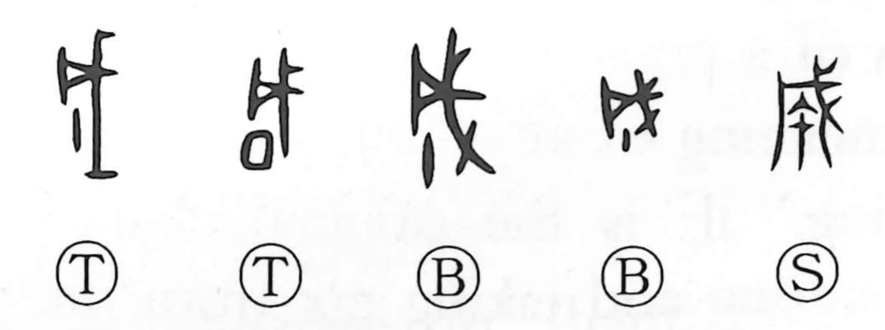

成

Kun: naru, nasu, nari | On: sei, jo
to become ・ to accomplish ・ to complete
Explanation
In the earliest forms, 成 combines the spear 戈 with a single vertical stroke that depicts a tassel or pendant hanging down. The graph shows the final act after a weapon was made: attaching a decorative pendant to the spear as a rite of purification and exorcism, the ceremony that marked the work as complete. From this completion rite the character came to mean to be complete, to become, and to accomplish. The same ritual logic appears in related usage (as in 就), where at the completion of a great fortress gate a vessel was anointed with the blood of a sacrificial dog. The sense of finishing and ritually purifying a work underlies the core meaning of 成.